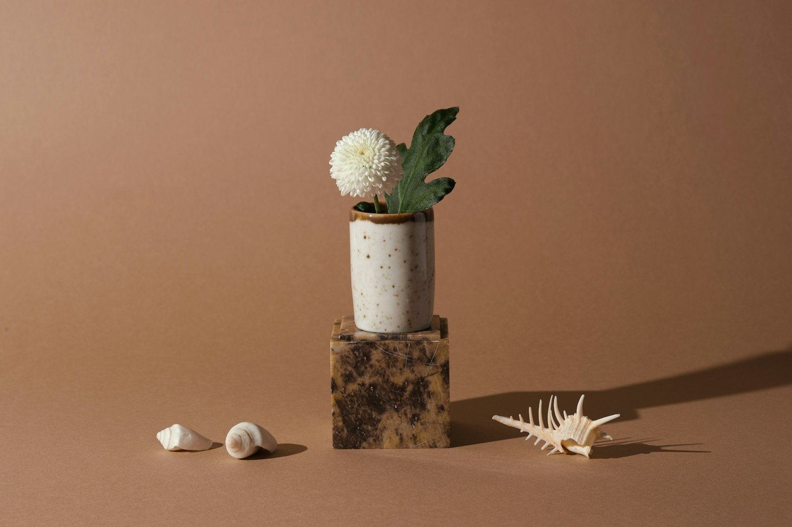

Dal
2019
studio.ortica
Idee social
Oggi
Pensa ai temi fissi come alle conversazioni del tuo brand: tutto quello che pubblichi entra in uno di loro.
Cosa
Da tre a cinque argomenti fissi
Ripetuti con costanza nel tempo
Voce del
brand
Esempi
- Consigli pratici
- Dietro le quinte
- Casi e risultati
- Novità del settore
- Offerte e servizi
